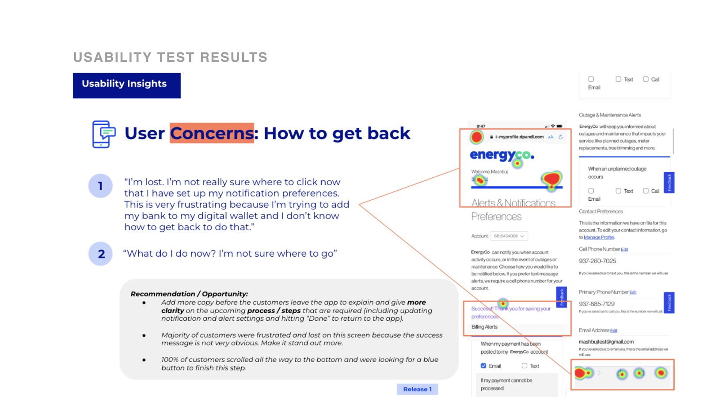
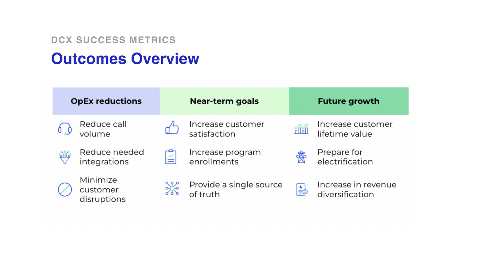

Hello there! I’m a Brazilian-American design leader and educator. I’ve practiced design for over two decades, including 10+ years in design leadership roles, for startups, agencies, and global brands like Louis Vuitton, General Electric, and Marriott.
But the work that has meant the most to me is teaching. From bringing Design Thinking to Miami Ad School to teaching 19 Product Design cohorts at Ironhack, I’ve watched career changers land their first design job and working designers find the confidence to lead.
I’m a proud dad to a daughter and a Blue Heeler pup. I’m a global citizen, currently based in South Florida, and trilingual in English, Portuguese, and Spanish.
Question 01
Please describe an interest, favorite activity, or hobby of yours.
It could be anything: just something you enjoy doing. For this particular answer, please only write up to 60 words and do it in a way that captivates your readers (us!).
My Answer
I’ve been taking things apart since I was a kid—and couldn’t always put them back together. Today that curiosity goes into vintage motorcycles and old trucks. Using YouTube and manuals, I’ve upgraded a 1972 Honda motorcycle and a 1985 Chevy C10 to be safer and run better. I’m no mechanic—learning as I go is the fun part.
1972 Honda 500 Four1985 Chevy C10
Question 02
What is most important to you when you look for a new job?
Please be completely honest and transparent about your situation and season of life; we’re not looking for “the right answer”. The more you tell us, the better we can align.
My Answer
I look at every opportunity through a few lenses, and I try to answer each question honestly:
Mission
Am I excited about the company, the problem it solves, its industry, and what it stands for?
Growth
Not “is this role easy,” but will it challenge me? Will I be excited by the work and the partners it overlaps with?
Influence
Is there room for collaboration and experimentation, and for my past experience to help shape strategy?
Team
How does the team communicate and work? What are its rituals? Is there humor between colleagues?
Impact
Can I see and measure the difference my work makes for the people it serves?
Trust & autonomy
Are decisions made close to the work? Is feedback candid and two-way?
Family
Will there be financial security? How risky is the business model, what’s the moat, and how strong is the competition?
Alignment
Do the answers line up on both sides? When the company’s needs and mine point the same way, I can commit fully and do my best work.
Question 03
How did you hear about this open position?
My Answer
I’ve known IxDF for over 10 years and have recommended your courses to my bootcamp students to continue their learning paths and areas of specialization.
I regularly check remote job sites like Wellfound and RemoteOK. The Course Director role jumped out at me immediately—I’d been looking to get back into design education, and for a remote opportunity.
Question 04
Show us some examples of concrete work you’re proud of having done yourself.
Please tell us why you are proud of what you sent us. Please be as specific as possible.
My Answer
Four projects I’m proud of, each for a different reason: research that reshaped a product, interaction design that crossed from screen to physical object, brand strategy that moved revenue, and a startup I helped launch.
Uplight · Innovation Lab · 10 months
Turning a hypothesis-driven roadmap into customer-validated design
As UX Strategist and Designer on Uplight’s DCX app—a utility customer experience covering 15 journeys—I inherited 4 personas and a feature roadmap that was already defined. The risk was shipping assumptions.
Built a research roadmap and standardized usability testing across the team
Ran research sprints: usability studies, customer surveys, interviews, and walkthroughs
Prototyped in Figma and designed the missing states and flows
Presented customer insights to the client and proposed changes to product strategy
Why I’m proud: customer evidence, not opinion, drove the design changes. For example, moving the stepper icons and raising their contrast to match users’ mental models and accessibility needs.
Research sprintsBefore & after: mental models and accessibility

Heat map & customer quotes

Outcomes overview
Pininfarina × GE · HiFi Toaster Oven · 4 months
Designing interaction for a physical product, with analog controls only
Pininfarina hired me as lead UX designer on an air-fryer toaster oven for GE’s heritage line, inspired by the original 1960s toaster. The brief: low price point, analog controls, room for a frozen pizza, and an air-fry mode.
Led UX from research and market positioning through user flows with system logic
Explored ideas fast with paper and cardboard prototypes before 3D models
Usability-tested task flows, then iterated hi-fi concepts with the industrial design team
Why I’m proud: the constraints forced the most careful interaction design I’ve done. Applying Fitts’s and Hick’s laws, we cut modes, swapped a toggle timer for a knob, and backlit the controls. A Hot indicator flashes white while preheating and turns solid red when ready, so the oven communicates status without a screen.
Mental models: Fitts’s and Hick’s laws mapped to control zonesUser input → system outputFinal design
A’trego by Starck · Monaco · Creative Director
Turning a Philippe Starck icon into a business that worked
A’trego had everything going for it: a Philippe Starck design, a waterfront setting on the Monaco border, and several beautiful spaces. What it didn’t have was a clear story. Guests didn’t know what it was for, so it struggled to find its place in the Monégasque dining scene.
As Creative Director at Monaco Media International, I led the new identity, brand architecture, digital strategy, and website. Our big move was to unbundle one confusing venue into four clear experiences under the “by A’trego” umbrella:
La Cantine, the restaurant
La Terrasse, the rooftop terrace
La Plage, the beach lounge
La Boîte, the night club
Each one spoke to its own audience and occasion, from Monaco locals and Côte d’Azur tastemakers to jet-setters visiting from Switzerland, Italy, Russia, and the UK.
+200%guests served*
+200%lunch revenue in under 3 months
+100%dinner reservations after 4 months
New revenuefrom the La Plage beach lounge and monthly performances at La Boîte
*Covers tripled, as reported by owner Sébastien Noat in Monaco Hebdo, May 2014.
Why I’m proud: this is the project that taught me design is an operating lever, not just polish. With one of the world’s most famous designers, the beauty was already there. My job was to make it legible: clear names, clear offers, and a clear path from discovery to reservation. That clarity is what turned an icon into a business.
La Plage menu
SunVessel · Miami · Experience Design Director
Designing an electric mobility experience, from app to charging dock
SunVessel set out to solve Miami’s short-trip mobility mess with the Lunaport Collection: a light electric vehicle paired with a smart charging dock that feels more like a piece of furniture than a cord hanging from a socket. The plan was to sell direct to riders in select Miami zip codes and to place vehicles in residential rentals.
As Experience Design Director, I led a team of 6 designers to ship:
An iOS app, from onboarding and QR unlock to the trip timer
A responsive website with zip-code-based checkout
The experience for the smart-charging dock station
1ststartup to partner with Pininfarina
0 accidentsin a pilot with hundreds of riders
Why I’m proud: SunVessel was full of firsts for me. It was my first time designing the UX for hardware and software together, including a connected IoT charging station with a voice user interface (VUI). Working with Pininfarina, the famed Italian design house, was a dream come true. They shaped the dock to fit many different settings, from building lobbies and coworking offices to high-end real estate. My biggest learning: for a startup, traction and adoption can be the toughest hurdle of all.
Can you give a concrete example of a recent situation where you “took ownership” of a task/project/etc at work and made something truly positive happen?
How do you define “taking ownership” of your work?
My Answer
Owning the metrics nobody owned
At Microsoft, I was on the Business Planning & Monetization Ops team, designing and building internal tools to improve the scale, accuracy, and efficiency of product pricing and business-model launches.
During a current-state experience audit, I noticed our team had a gap in metrics. Past goals and OKRs leaned on vanity metrics, and there was no clear process to track progress. It was outside my original role, but I knew it mattered, so I asked to take complete ownership of our team’s metrics.
Up-skilled on nights and weekends through measurement training
Ran North Star workshops to set the foundation for each team member’s vertical
Partnered with Data Science and Engineering to build tracking into our tools
Defined the value proposition of each key dashboard, bringing much-needed observability to our work
Tracked our bets and product experiments through scorecards to see what was working and what wasn’t
6+ mo → <90 daysaverage launch timeline
Up to 87%fewer regional launch workflows
30+ hrssaved per launch
200+pain points surfaced end to end
Working session with the teamMapping the end-to-end journeyLaunch readiness process, 6–10 months end to endMicrosoft campus
How I define taking ownership
Taking ownership means noticing a gap and proactively seeing it through to resolution, owning the outcome even when it’s outside my job description. It’s being willing to do more than what’s asked and stepping up to help, with a spirit of collaboration rather than finger-pointing. And it means keeping team leads informed, so work can be prioritized, delegated, and divided strategically when needed.
Question 06
Do you have experience working remotely and what skills do you bring to thrive in an asynchronous working environment?
Additionally, what areas do you believe you could improve on to further enhance your productivity and effectiveness?
My Answer
Remote since 2020, and loving it
I’ve worked fully remote for six years, and it’s where I do my best work. It also lets me be part of my loved ones’ everyday lives, which means the world to me. And I treasure the moments when the team meets in person: those days build the trust that makes async work run smoothly.
What I bring to async work
Connection
Connecting with people is my superpower. Strong relationships and trust are what make remote teams work.
The “hit by the bus” paper trail
Centralized research, markdown docs, and self-documenting files, down to named and grouped layers. Anyone can pick up where I left off, in any time zone.
Clear expectations
I make decision deadlines, trade-offs, and next steps explicit. And I run a pre-mortem at kickoff, not just a post-mortem at the end.
A setup built for focus
A standing desk and four monitors 🙂
Where I’m growing
Knowing when to break async
In deep focus, I default to resolving things in writing. Now, when a thread starts to loop, I set up a quick 10–15 minute call, record it, and document the outcome from the transcript right away.
Protecting deep work
Back-to-back meetings at Microsoft taught me to block focus time and keep meetings agenda-driven and time-boxed, respecting everyone’s time zones.
Question 07
Which season of life are you currently in and what are your career goals?
For example, are you in a season of life where you work long hours to learn as much as possible? Or in a season where you prioritize work-life balance because you’ve already gained substantial experience? The more transparency you give us, the better we can align and create common goals for your career.
My Answer
I’m in a season of intention. After more than two decades in design, I’m choosing work with a greater purpose, because how I spend my time matters more than ever. My career goals come down to three areas:
Intention
Investing my time in work that matters, and going deep. As a lifelong learner, I love obsessing over something new.
Inclusion
Designing learning that welcomes people from every background, and building teams where every voice shapes the work.
Impact
Making a dent in the universe, with work whose results I can see in the people it serves.
Will that sometimes mean late nights? Maybe. When something matters, I’m happy to go beyond typical hours to see it through. I also know my best work is sustainable work, so I protect the balance that keeps my energy, curiosity, and creativity high for the long run.
Question 08
Look at our current course and Master Class curriculum at interaction-design.org.
What’s missing that will matter in three years, and what should we retire because the field has moved on?
Please be as specific as possible.
My Answer
From static screens to agentic systems
I started with research, including calls with friends in tech education. Traditional design education, from degree programs to bootcamps, was built for an era when static interface deliverables were the core job. The market has moved toward high-velocity execution, agentic system design, design engineering, and business strategy, leaving real gaps between what curricula teach and what product teams need.
I’ve been learning adjacent roles myself, like AI PM and business strategy. Then I overlaid my findings with three lenses:
Sentient Design
Josh Clark & Veronika Kindred
Intelligent interfaces that adapt to people’s context in real time, well beyond the chatbot.
Tree-Shaped Designer
John Maeda, Design in Tech 2026
Rooted in craft, growing into stewardship, and branching toward amplified designer or amplified engineer.
Layers of AI UX
Emily Campbell
Designing beneath the surface: interface, context, harness, model, governance, and emergence.
What’s missing: 7 areas for the next 3 years
I synthesized all of this into an AI UX Execution Framework for the AI experience shift: seven areas where the legacy, T-shaped designer is giving way to a tree-shaped one, with the skills, actions, and emerging tools for each. Tap a row to expand it.
Finally, I analyzed the gaps that will define the next three years of product design, alongside the courses and Master Classes becoming obsolete as the field moves from static interface execution to probabilistic, agentic systems.
What I’d add: one offering per gap
IxDF already has strong, timely AI Master Classes. The gap is depth: today there is one AI course, and it’s currently closed. I’d turn the seven areas into an AX Designer career path, with each course building on Master Classes you already have.
01 Course
Design Engineering: Prototype with Code and AI
Go from vibe coding to code-backed prototypes: design tokens wired to production, GitHub basics, and testing latency and probabilistic outputs in live sandboxes.
Builds on: Vibe Coding for Everyone; GitHub for Designers
Design the trust gradient: intent previews, autonomy dials, action audits, confidence UI, and graceful error recovery for non-deterministic systems.
Builds on: How to Design for User Trust; Design for AI Agents
Sentient Design · Layers: interface
03 Master Class
Art Directing Generative Output
Tool-agnostic taste and curation: brief, judge, and refine generative work so it lands on brand, with style guardrails a team can share.
Replaces: tool-specific generative tutorials
Tree-shaped · roots in craft
04 Course
Design for Business Outcomes
Tie design decisions to unit economics (CAC, LTV, retention), model the upside, and validate hypotheses fast instead of polishing process decks.
Builds on: Design KPIs; Speak Strategy, Get Influence
Tree-shaped · stewardship
05 Course
AI-Assisted Research Ops: From Telemetry to Insight
Combine qualitative research with product telemetry, automate synthesis pipelines, and keep it ethical, so research feeds decisions at the speed teams ship.
Builds on: How to Use AI Ethically in UX Research
Layers: context
06 Course
Orchestrating AI Workflows for Design Teams
Map agentic workflow loops end to end and decide exactly where a human should step in, using node-based tools like n8n.
Builds on: How to Build Agentic AI Workflows for Product Design
Layers: harness
07 Course
Context Engineering for Designers
Write system instructions, define tool schemas and MCP connections, set governance guardrails, and run evals that catch emergent behavior before users do.
New territory: no current IxDF coverage
Layers: model, governance, emergence
What I’d retire, merge, or rebuild
These map to the legacy column of the framework: static deliverables, platform silos, and tool-specific tutorials.
Rebuild
Build a Standout UX/UI Portfolio and How to Elevate Your Portfolio
Move from 50-slide process case studies (“design process theater”) to proof of work: live prototypes, measured outcomes, and decisions.
Merge
The overlapping intro AI Master Classes
Human-Centered Design for AI, How to Design with and for Artificial Intelligence, How to Design Experiences for AI, and How to Design Products with AI Features cover similar ground. Fold them into one AI foundations path.
Retire
The AI Playbook: How to Capitalize on Machine Learning
Its machine-learning-era framing predates generative and agentic AI. The new courses above cover what replaces it.
Retire
Adobe Firefly and Generative AI (Beginners Guide and Deep Dive)
Tool tutorials age in months. Teach tool-agnostic art direction instead (#03).
Merge
The six mobile courses and Master Classes
Mobile UX: The Beginner’s Guide, Mobile UI Design, Mobile UX Strategy, and three mobile Master Classes become one multimodal, cross-device course.
Merge
UX Design for Augmented Reality and UX Design for Virtual Reality
Combine into one spatial and multimodal interfaces course, where AI is changing input the most.
Merge
How (and When) to Run a Design Sprint and The AI Design Sprint
Keep one sprint format, built for AI-speed prototyping.
Rebuild
Web Design for Usability
Page-centric web usability gives way to adaptive interfaces that design themselves around user context (Sentient Design).
Question 09
Name five designers you’d bring in to teach with us.
For each one, tell us why we should choose them, and what the pros and cons are. Please don’t include anyone we already work with.
My Answer
Your answer to question 9 goes here. Answered as a ~4-minute Loom video — embed or link it here.
Question 10
Share something you built or led that you’re proud of: a product, a design team, a course, an AI teaching app, or a conference track.
Tell us what it was, the thinking behind it, how long it took you to create, what went wrong, and how you improved it. If you’d do it differently now, tell us how. Please be as specific as possible. Include links, dates, and screenshots where possible.
My Answer
Your answer to question 10 goes here. What it was, the thinking, timeline, what went wrong, how you improved it — with links, dates, and screenshots.
Question 11
Please explain how, or if, you use AI in your work.
Where does it work best for you, and where do you have to work hardest to get something good out of it? If you use an LLM, which model and version are your favorite?
My Answer
Your answer to question 11 goes here.
Question 12
IxDF offers our team members abundant opportunities for unlimited growth. This role sits on our Editorial team, working closely with our Education Designers, Course Writers and Editors, Video team, Growth team, and Founders. Over time it can grow in several directions: deeper into course direction, into leadership, into the AI learning tools we’re building, into hands-on UX/UI design work, or something else.
What interests you most, and what would you want to be doing in three years?
My Answer
Bridging the AI education gap for designers
I’m really excited about this role because it lines up with where I want to go: bridging the gap in AI education for designers, and making a global dent.
My first focus is doing my best work in the role and making a real impact on the team within my first 90 days. It’s also great to know IxDF offers room to grow, so over time I can expand on my strengths beyond the role.
In three years
I’d love to be leading IxDF’s AI curriculum for designers: deciding what hundreds of thousands of designers learn next, growing paths like the AX Designer track, and helping shape the AI learning tools that make it stick.
We’re living in unprecedented times, and AI is evolving faster than anything humanity has seen before. I can’t think of a better place to be: a beacon of light and hope that helps guide designers through this uncertainty, and a champion for what design education so desperately needs.